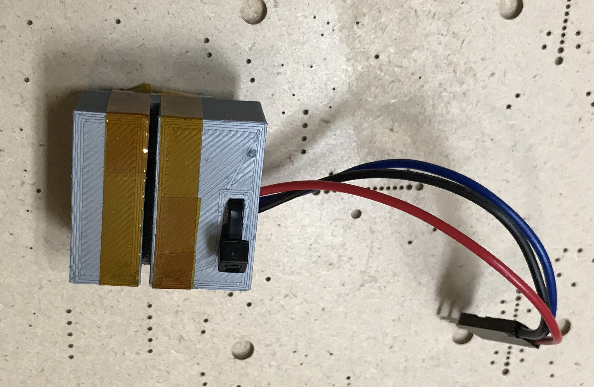

SMT Part Tape Counter

I wanted to get a handle on my Digikey SMT part cruft, but didn't want to count the parts by eye. Built a simple 3D-printed sensor block with a break-beam sensor that I can easily slide the SMT part tape through and hooked it up to a simple Arduino shield with two buttons and a 3 digit 7-seg display. The right button resets the count and the left button sets the number of parts/hole on the tape.
I was lazy hooking up the 7-segs and put a current-limiting resistor per digit on the low-side, so the brightness changes depending on how many segments are lit up. Still legible and saved me having to add MOSFETs or something to sink the current.
